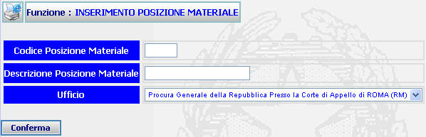

GENERALITA'
INSERIMENTO POSIZIONE MATERIALE: La funzione, consente
di inserire
una nuova posizione materiale.
ATTENZIONE:
Prima di iscrivere una nuova
posizione materiale è utile verificare se sia già presente nel sistema tramite la funzione di
ricerca
posizione materiale.
LE MASCHERE VIDEO
La funzione in
esame viene realizzata attraverso l'utilizzo della seguente maschera
che
riporta gli elementi
descrittivi
della nuova posizione
materiale:

COME FARE PER ...
Per inserire
una nuova posizione materiale
l'amministratore deve:
-
Posizionarsi sulla
scheda Inserimento;
-
Introdurre i dati;
-
Confermare i dati
inseriti nella maschera agendo sul bottone
 . A fronte di questa
operazione
la
nuova posizione materiale viene inserita nel
sistema e viene visualizzata la scheda del
Dettaglio posizione materiale.
. A fronte di questa
operazione
la
nuova posizione materiale viene inserita nel
sistema e viene visualizzata la scheda del
Dettaglio posizione materiale.
CAMPI
I
dati che
consentono di definire
una nuova posizione materiale sono i seguenti:
| NOME |
DESCRIZIONE |
|
Codice posizione materiale * |
Compilare il campo con testo libero |
|
Descrizione posizione materiale * |
Compilare il campo con testo libero |
|
Ufficio |
Selezionare tramite la tendina la voce prescelta |
* Da notare
che per i campi Codice posizione materiale e Descrizione posizione
materiale sono obbligatori.
PULSANTI
E' presente
il pulsante
 di stampa del contesto (videata)
facente parte del gruppo di
pulsanti di "Uso Comune".
di stampa del contesto (videata)
facente parte del gruppo di
pulsanti di "Uso Comune".
BOTTONI
Oltre ai
comandi funzionali relativi al menù verticale
sono presenti i seguenti comandi:
|
COMANDI |
DESCRIZIONE |
|
|
A fronte di
tale comando, il sistema dopo aver verificato la validità dei dati
specificati, termina la funzione con l'inserimento
della
nuova posizione materiale. |
CONTROLLI
A fronte
della pressione del bottone
, il sistema
verifica la correttezza dei dati e visualizza un messaggio di errore nel caso che:
-
Entrambi i campi obbligatori, Codice posizione materiale e Descrizione
posizione materiale, non risultino inseriti.
Se il sistema non riscontrerà errori verrà visualizzata la
maschera
del
Dettaglio posizione materiale.
ATTENZIONE:
Se l'ufficio non è abilitato, o non necessita, della gestione della funzione , il sistema, anziché aprire la
maschera di Inserimento
della
nuova posizione materiale, visualizzerà il seguente messaggio: